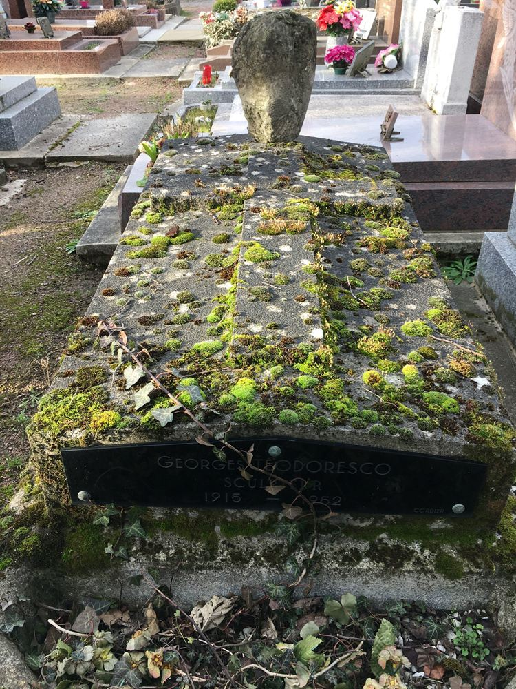
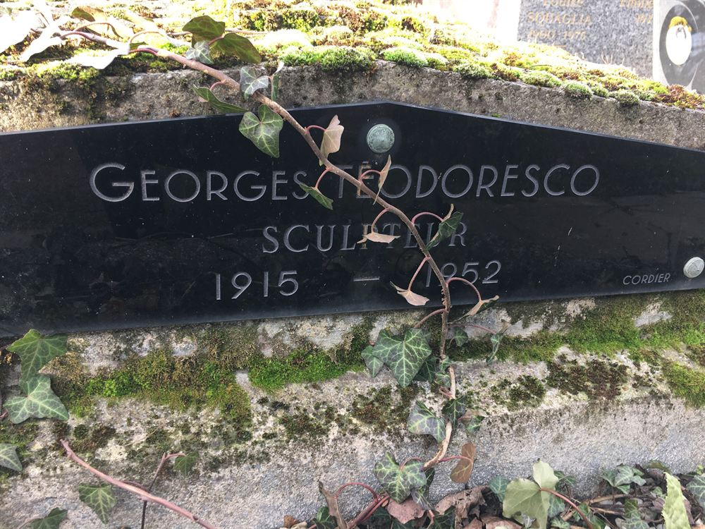

George Teodorescu · 1915–1952
Viață
[Text de completat: o scurtă prezentare a vieții între trei țări și a ceea ce s-a recuperat până acum.]
- 1915
-
[1933–1937]
București: Școala de Arte Frumoase
[Text de completat: educație și profesori.]
![[Fotografie: Școala de Arte Frumoase din București]](assets/img/placeholder.svg)
-
[1937]
Paris
[Text de completat: sosirea la Paris, Montparnasse și întâlnirea cu Constantin Brâncuși.]
-
[1940–1947]
Anii războiului
[Text de completat: unde a locuit și a lucrat în timpul războiului.]
-
1948–1951
Buenos Aires
[Text de completat: emigrarea în Argentina, expoziții, cercul argentinian.]
-
1952
Moartea la Villejuif, Franța


Despre ziua în care George Teodorescu a venit pe lume
A trezit-o sunetul melodios al clopotului bisericii din sat. Pentru câteva clipe nu înțelegea de ce bate clopotul. Era obosită. Pruncul din pântece fusese deosebit de vioi și ea nu se odihnise bine.
S-a ridicat gemând și s-a dus la fereastră. „- Ce sărbătoare ar putea fi?” se întrebă somnoroasă.
Caisul de lângă fereastră începuse să se încarce cu flori. Deschise larg fereastra și mireasma dulce a primăverii intră în cameră. Pruncul se mișcă nerăbdător și-o făcu să-și pună blând palmele peste pântecul greu. Maria oftă și se gândi că ar mai avea cam două săptămâni până la soroc.
În cameră năvăli Paul, primul născut, un băiețel de cinci ani urmat de Tinca, fata din casă. Maria îi primi îmbrățișarea năvalnică și-l sărută pe frunte.
- Mai ușor, dragul mamei!
Băiatul o luă de mână și o privi serios.
- Când vine bebe?... Vreau să mă joc cu el mai repede.
- Va veni curând. Hai, du-te și te joacă afară. Vezi ce soare e?
Tinca luă copilul de mînă și ieșiră.
Fără veste, o durere puternică îi scutură corpul. Respiră adânc de câteva ori. Moașa îi spusese că mai are de așteptat. Neliniștită, făcu un pas către ușă. În acel moment un val de lichid i se scurse pe picioare. Deschise ușa și strigă:
- Aurel! Vino, te rog!...
Soțul ei apăru imediat. Înțelese situația și o conduse către pat.
- Draga mea! Se pare că azi vom spune bun venit celui de-al doilea copil! Stai liniștită. Mă duc să anunț medicul.
Ieși apoi se întoarse:
- Azi e „Izvorul Tămăduirii”. Copilul nostru se va naște la zi mare!
... Peste câteva ore, Aurel Teodorescu, avocat, va declara nașterea celui de-al doilea fiu în prezența a doi martori, după obiceiul vremii.
„ Act de naștere din anul una mie nouă sute cinsprezece, luna aprilie, ziua douăzeci și trei, orele patru dupăamiaza. În ziua de douăzeci și două aprilie ora douăsprezece și douăzeci minute după amiază s-a născut în casa părinților săi din comuna Ciochina un copil de sex bărbătesc căruia i s-a dat numele de George, numele de familie fiind Teodorescu, fiu legitim al domnului Aurel Teodorescu domiciliat în comuna Ciochina și al doamnei Maria născută Atanasie Petrescu domiciliată în comuna Ciochina.”